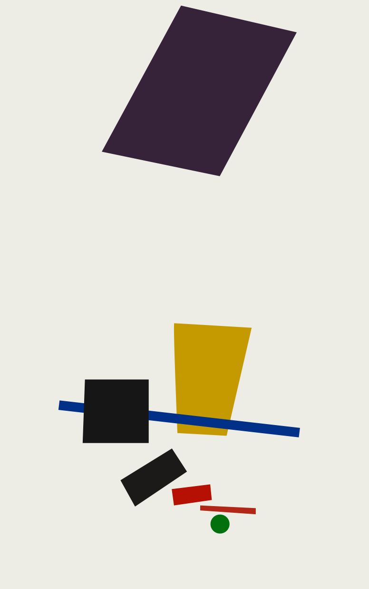
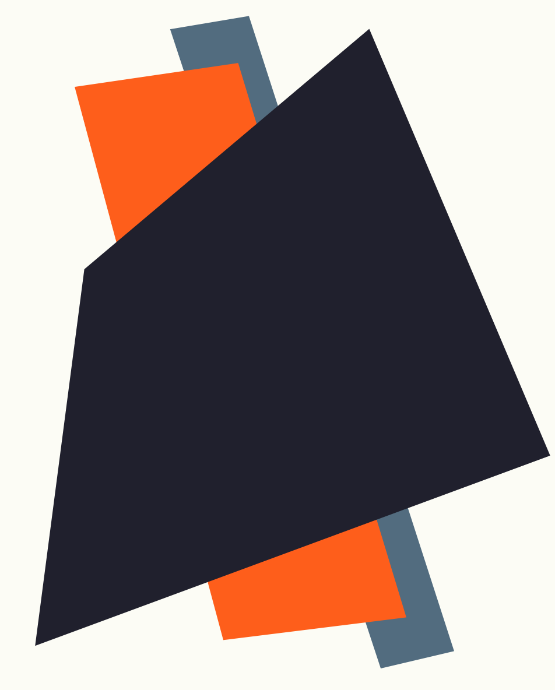
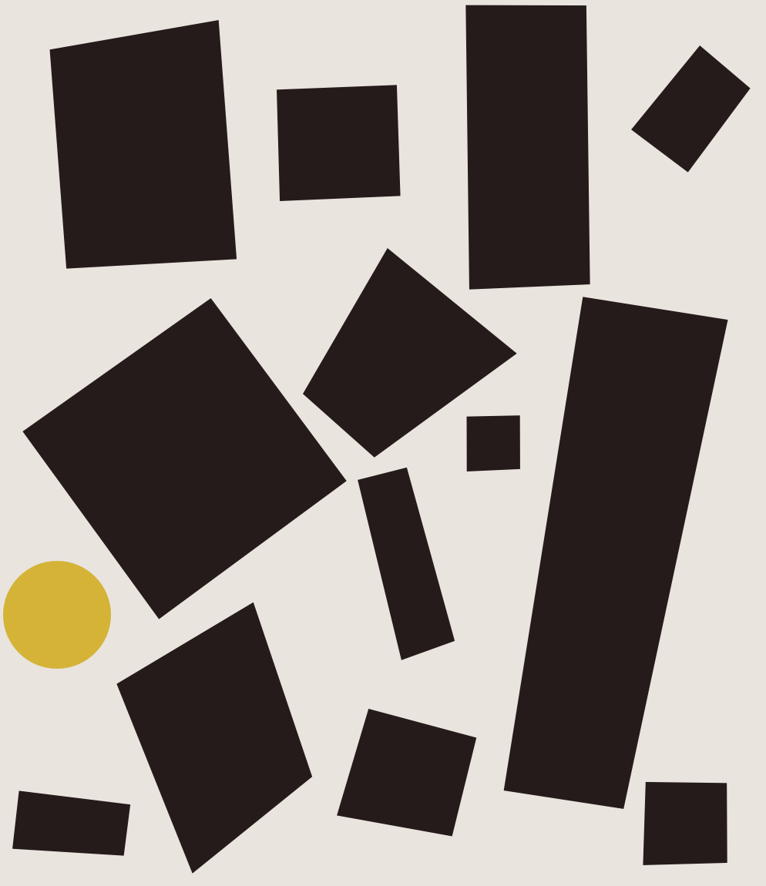
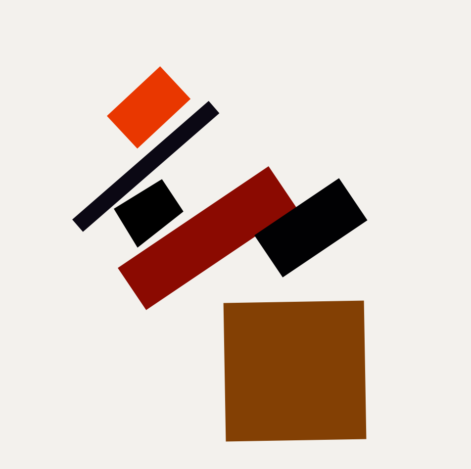

Живописный реализм футболиста

Супрематизм. Конструкция

Живописная архитектоника

Супрематизм

Композиция

Супрематизм

Супрематическая живопись: летящий аэроплан

Kestnermappe Proun, Rob. Levnis and Chapman GmbH Hannover #5